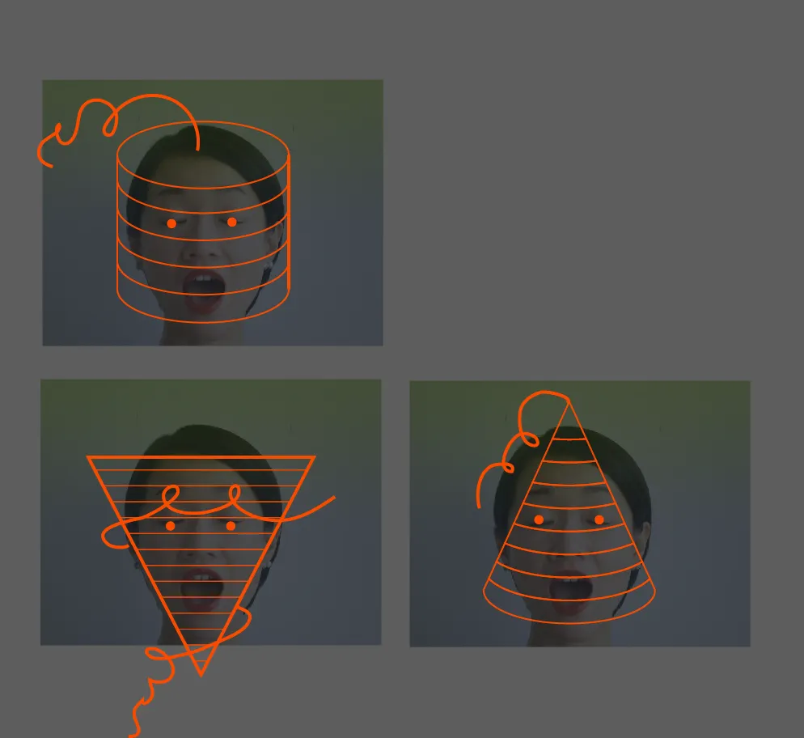
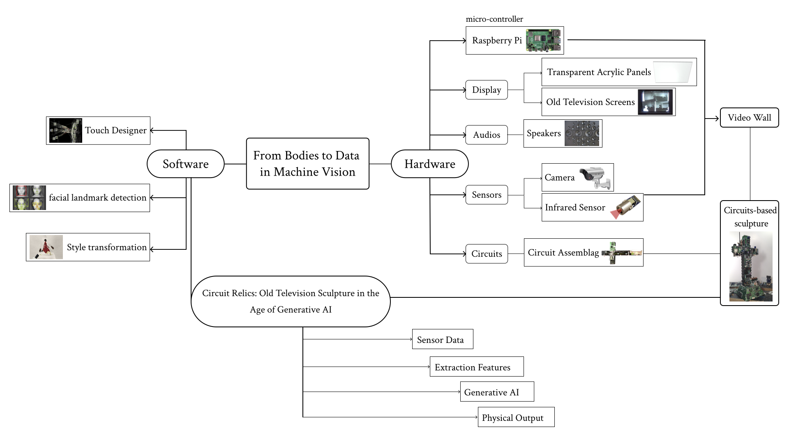
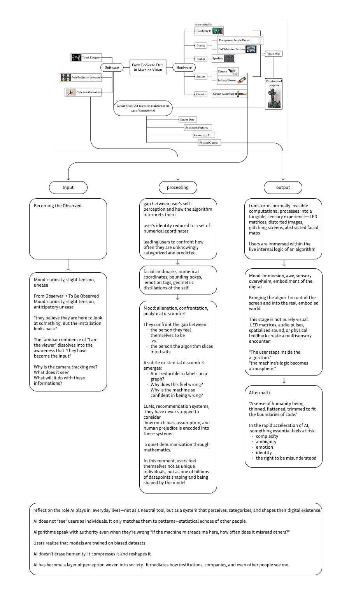
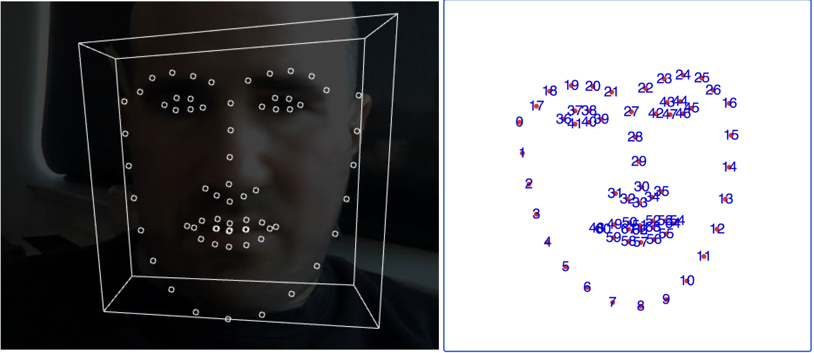

____ __ ____ ___ __ __ _ ___
( _ \ / _\( _ \/ __)/ \ ( ( \/ __)
) __// \) /\__ ( O )/ /\__ \
(__) \_/\_(__\_)(___/\__/ \_)__)(___/
__ ____ ____ _ _ __ __ _ ___
/ \( _ \( _ \/ )( \ / _\ ( ( \/ __)
( O )) / ) __/) __ (/ \/ /\__ \
\__/(__\_)(__) \_)(_/\_/\_/\_)__)(___/
>> NORA_RUI_OVERRIDE_INIT //
Final WEB
01 Problem Statement
Artificial intelligence has become an omnipresent phenomenon. Yet the internal logic remains unseen. Public attention fixates on efficiency, while few recognize what it means to become a data point.
This project investigates how human identity is transformed. Labels such as "Asian" / "female" are applied. Subjectivity is deconstructed, fragmented, and redefined.

02 Similar Artworks
+--+--+--[ DATA_STREAM ]--+--+--+
Adam Harvey — CV Dazzle
Nam June Paik — TV Buddha
Nota Bene — In order to control
Paolo Cirio — Capture
Rafael Lozano-Hemmer — Zoom Pavilion
Zack Lieberman — Más Que la Cara
The algorithmic gaze is absolute.



03 System Architecture

// PROJECT_ARCHIVE_04
05 EXPECTED_USER_OUTCOMES _

06 Concerns / Limitations

Entering the VOID.
/!\ WARNING /!\
BIAS_DETECTED
This project critically examines how AI systems break human identity into fragments, labels, and statistical categories.
Because we use the same computer-vision tools we aim to critique, we remain cautious. Our system does NOT attempt to classify people or store identifiable data.
We acknowledge the risks of bias and misrepresentation. We treat these limitations not as features to optimize, but as conditions to make visible.
// OBJECTIVE: Expose the mechanics of abstraction.